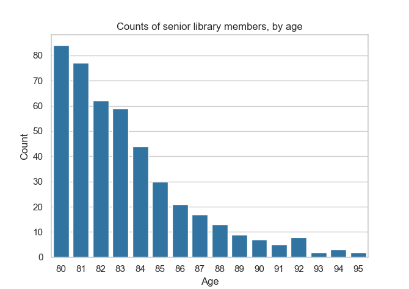
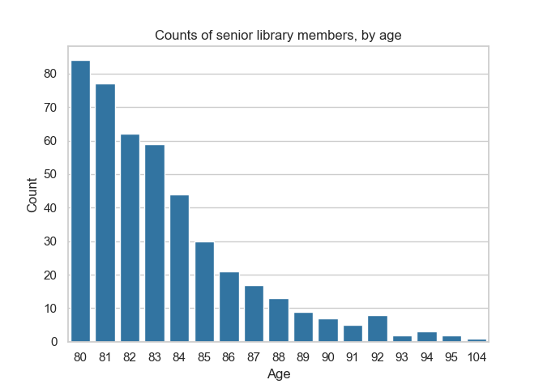
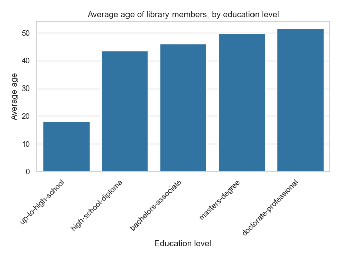
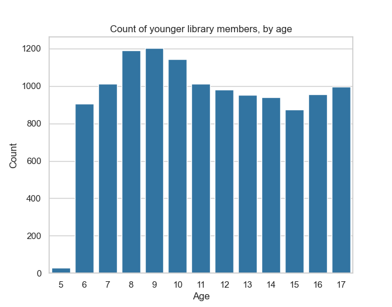
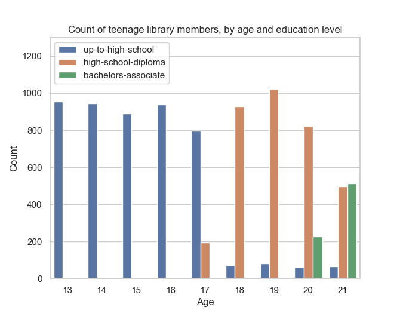

Group-by queries#
In all previous tutorials, all aggregations we saw were global aggregations, returning a single statistic for all the data. But many common data analysis operations are group-by queries: they partition the data into groups, and compute one aggregation per group. In this tutorial, we will demonstrate how to express such queries using Tumult Analytics.
In a traditional query engine, you can simply group by a column. Suppose, for example, that you want to see the distribution of ages across the most senior members of our library. You could count the number of members for each age, for age 80 and above. In a language like SQL, this is likely how you would express this query.
SELECT age, COUNT(id)
FROM members
WHERE age >= 80
GROUP BY age
The result of such a query could be plotted as a bar chart looking like this.

Now, suppose that the oldest person living in Durham becomes a member of our library. Assume that this person is aged 104, and that they are the only person that age in the area. Computing the same query might get us results that look like this.

There is a crucial difference between these two charts: an entirely new age value, 104, appears in the second chart but not the first one. This is a problem if we want to compute this query using differential privacy.
Remember: the goal of differential privacy is to avoid leaking information about individuals. But even if we add noise to the value of each count, the second chart will be enough for someone to deduce that someone aged 104 is a member of the library. Otherwise, this value wouldn’t appear at all! If there is a single person in the area with this age, then it is obvious that they are a member. We have learned precise information about a single individual, which is supposed to be impossible.
For this reason, when computing a group-by query with differential privacy, we will need to indicate the list of possible group-by keys: the different categories that we are going to partition the data into. In the rest of this tutorial, we will demonstrate how to do this with Tumult Analytics.
Setup#
Let us follow the same setup process as in the earlier tutorials, including the infinite privacy budget—not to be used in production!
from pyspark import SparkFiles
from pyspark.sql import SparkSession
from tmlt.analytics import (
AddOneRow,
KeySet,
PureDPBudget,
QueryBuilder,
Session,
)
spark = SparkSession.builder.getOrCreate()
spark.sparkContext.addFile(
"https://raw.githubusercontent.com/opendp/tumult-demo-data/refs/heads/main/library-members.csv"
)
members_df = spark.read.csv(
SparkFiles.get("library-members.csv"), header=True, inferSchema=True
)
session = Session.from_dataframe(
privacy_budget=PureDPBudget(epsilon=float('inf')),
source_id="members",
dataframe=members_df,
protected_change=AddOneRow(),
)
Introduction to KeySets#
To specify the list of group-by keys in Tumult Analytics, we use the
KeySet class. A KeySet specifies both the
columns by which we are going to group by, and the possible values for those
columns.
The simple way to initialize a KeySet, especially when there are only a few
possible values for a given column, is to use
from_dict(). For example, the following
KeySet enumerates all possible values for the categorical column
education_level.
edu_levels = KeySet.from_dict({
"education_level": [
"up-to-high-school",
"high-school-diploma",
"bachelors-associate",
"masters-degree",
"doctorate-professional",
]
})
Once we have this KeySet, we can use it in group-by queries, using the
groupby() operation. For
example, let us compute the average age of library members, grouped by education
level.
edu_average_age_query = (
QueryBuilder("members")
.groupby(edu_levels)
.average("age", low=0, high=120)
)
edu_average_ages = session.evaluate(
edu_average_age_query,
privacy_budget=PureDPBudget(1),
)
edu_average_ages.sort("age_average").show(truncate=False)
+----------------------+-----------+
|education_level |age_average|
+----------------------+-----------+
|up-to-high-school |18.00410415|
|high-school-diploma |43.68196862|
|bachelors-associate |46.27907318|
|masters-degree |49.70756023|
|doctorate-professional|51.71076923|
+----------------------+-----------+
The same data can be represented graphically using your favorite visualization
tool. For example, the following uses seaborn;
if you want to run it locally, you can install it with pip install seaborn.
import matplotlib.pyplot as plt
import seaborn as sns
sns.set_theme(style="whitegrid")
g = sns.barplot(
x="education_level",
y="age_average",
data=edu_average_ages.toPandas().sort_values("age_average"),
color="#1f77b4",
)
g.set_xticklabels(g.get_xticklabels(), rotation=45, horizontalalignment="right")
plt.title("Average age of library members, by education level")
plt.xlabel("Education level")
plt.ylabel("Average age")
plt.tight_layout()
plt.show()

A value in a KeySet will appear in the output, and a value that is not in a KeySet will not, regardless of which values appear in the actual data. For example, in our fake dataset, all the age values are 6 or above: younger children cannot be members of our library. So, what happens if we compute counts for age values between 5 and 17?
young_ages = list(range(5, 18)) # [5, 6, ..., 17]
young_age_keys = KeySet.from_dict({"age": young_ages})
young_age_query = (
QueryBuilder("members")
.groupby(young_age_keys)
.count()
)
young_age_counts = session.evaluate(
young_age_query,
PureDPBudget(0.1)
)
sns.barplot(
x="age",
y="count",
data=young_age_counts.toPandas().sort_values("age"),
color="#1f77b4",
)
plt.title("Count of younger library members, by age")
plt.xlabel("Age")
plt.ylabel("Count")
plt.show()

We observe a low, but non-zero count for age 5, even though this value is completely absent in our dataset. This is entirely due to the noise added to the real value (here, 0).
Multiple columns#
So far, we saw how to run group-by queries, where we grouped by a single column. What if we want to group by multiple columns? One simple way is to use a Python dictionary with multiple values. Let’s take an example, and compute counts by age (of teenagers and young adults) and education level.
teen_edu_keys = KeySet.from_dict({
"age": list(range(13, 22)), # [13, 14, ..., 21]
"education_level": [
"up-to-high-school",
"high-school-diploma",
"bachelors-associate",
"masters-degree",
"doctorate-professional",
],
})
This gives us a KeySet with each combination of values across the two columns
age and education_level. To manually check what’s inside of a KeySet,
we can call its tmlt.analytics.KeySet.dataframe() method, which
will return the group-by keys it encapsulates, as a Spark DataFrame.
teen_edu_df = teen_edu_keys.dataframe()
teen_edu_df.sort("age", "education_level").show(n=12, truncate=False)
+---+----------------------+
|age|education_level |
+---+----------------------+
|13 |bachelors-associate |
|13 |doctorate-professional|
|13 |high-school-diploma |
|13 |masters-degree |
|13 |up-to-high-school |
|14 |bachelors-associate |
|14 |doctorate-professional|
|14 |high-school-diploma |
|14 |masters-degree |
|14 |up-to-high-school |
|15 |bachelors-associate |
|15 |doctorate-professional|
+---+----------------------+
only showing top 12 rows
And we can use this KeySet to perform a group-by query on multiple columns.
teen_edu_query = (
QueryBuilder("members")
.groupby(teen_edu_keys)
.count()
)
teen_edu_counts = session.evaluate(
teen_edu_query,
PureDPBudget(0.2),
)
teen_edu_counts.sort("age", "education_level").show(n=12, truncate=False)
+---+----------------------+-----+
|age|education_level |count|
+---+----------------------+-----+
|13 |bachelors-associate |-7 |
|13 |doctorate-professional|10 |
|13 |high-school-diploma |-1 |
|13 |masters-degree |1 |
|13 |up-to-high-school |949 |
|14 |bachelors-associate |-13 |
|14 |doctorate-professional|6 |
|14 |high-school-diploma |2 |
|14 |masters-degree |-3 |
|14 |up-to-high-school |931 |
|15 |bachelors-associate |-17 |
|15 |doctorate-professional|-8 |
+---+----------------------+-----+
only showing top 12 rows
Note that we get some values in the output that are very low, or even negative. This
makes sense: some combinations of age and education_level don’t actually
appear in the input. Teens aged 13 don’t have PhDs! So what we see for these
columns is pure noise, added to zero values.
We can fix that problem by creating a KeySet that only contains reasonable
combinations of values. One way to do this is by creating a Spark DataFrame with
the desired combinations, and initializing a KeySet with it using the
from_dataframe() method. Here, let’s create
such a KeySet for our age range, making some assumptions about the minimum age at
which certain education levels can be achieved.
teen_edu_subset_keys_df = spark.createDataFrame(
[
(13, "up-to-high-school"),
(14, "up-to-high-school"),
(15, "up-to-high-school"),
(16, "up-to-high-school"),
(17, "up-to-high-school"),
(17, "high-school-diploma"),
(18, "up-to-high-school"),
(18, "high-school-diploma"),
(19, "up-to-high-school"),
(19, "high-school-diploma"),
(19, "bachelors-associate"),
(20, "up-to-high-school"),
(20, "high-school-diploma"),
(20, "bachelors-associate"),
(21, "up-to-high-school"),
(21, "high-school-diploma"),
(21, "bachelors-associate"),
],
["age", "education_level"],
)
teen_edu_subset_keys = KeySet.from_dataframe(teen_edu_subset_keys_df)
Once we have our KeySet, we can use it in the desired aggregation…
teen_edu_query = (
QueryBuilder("members")
.groupby(teen_edu_subset_keys)
.count()
)
teen_edu_counts = session.evaluate(
teen_edu_query,
PureDPBudget(0.2),
)
… and plot the results.
edu_order = ["up-to-high-school", "high-school-diploma", "bachelors-associate"]
sns.barplot(
x="age",
y="count",
hue="education_level",
hue_order=edu_order,
data=teen_edu_counts.toPandas()
)
plt.ylim(0, 1300)
plt.title("Count of teenage library members, by age and education level")
plt.xlabel("Age")
plt.ylabel("Count")
plt.legend(loc="upper left")
plt.show()

This is also particularly useful when there are a large number of group-by keys: you can load a large Spark DataFrame into a KeySet directly, without having to enumerate the values in a Python dictionary.
Manipulating KeySets#
Most applications of Tumult Analytics require specifying the keys to group-by queries. To make this process as easy as possible, we added first-class support for common KeySet manipulation operations. Let us review these operations.
Cross-product#
When two KeySets are specifying group-by keys for different sets of columns, you
can use the
multiplication operator to
generate the combination of values present in both KeySets. Consider, for
example, the combination of teen ages and education levels that we started with
in the previous section.
teen_edu_keys = KeySet.from_dict({
"age": list(range(13, 22)), # [13, 14, ..., 21]
"education_level": [
"up-to-high-school",
"high-school-diploma",
"bachelors-associate",
"masters-degree",
"doctorate-professional",
],
})
There is another way to specify the same KeySet: initializing one KeySet for each column, and taking the cross-product of both using the multiplication operator.
teen_keys = KeySet.from_dict({
"age": list(range(13, 22)), # [13, 14, ..., 21]
})
edu_keys = KeySet.from_dict({
"education_level": [
"up-to-high-school",
"high-school-diploma",
"bachelors-associate",
"masters-degree",
"doctorate-professional",
],
})
print(teen_edu_keys == teen_keys * edu_keys)
True
Projection#
What if you have a large KeySet containing possible combination of values
between multiple columns, and want to select only a subset of these columns? For
this use case, you can use the
projection operator. For
example, taking the two-column KeySet above and projecting it on a single column
will retrieve the original one-column KeySet.
print(edu_keys == teen_edu_keys["education_level"])
True
Note that this operation, just like the
from_dataframe() method, removes duplicates
in the data: teen_edu_keys["education"] only has one row for e.g.
"up-to-high-school", even though this value appears in multiple rows in the
original KeySet.
You can easily specify multiple columns using multiple parameters, or a list.
print(teen_edu_keys == teen_edu_keys["age", "education_level"])
True
print(teen_edu_keys == teen_edu_keys[["age", "education_level"]])
True
Filters#
Finally, KeySets support the same filter()
operation as Spark DataFrames. For example, consider the KeySet with specific
combinations of age and education level from before.
teen_edu_subset_keys_df = spark.createDataFrame(
[
(13, "up-to-high-school"),
(14, "up-to-high-school"),
(15, "up-to-high-school"),
(16, "up-to-high-school"),
(17, "up-to-high-school"),
(17, "high-school-diploma"),
(18, "up-to-high-school"),
(18, "high-school-diploma"),
(19, "up-to-high-school"),
(19, "high-school-diploma"),
(19, "bachelors-associate"),
(20, "up-to-high-school"),
(20, "high-school-diploma"),
(20, "bachelors-associate"),
(21, "up-to-high-school"),
(21, "high-school-diploma"),
(21, "bachelors-associate"),
],
["age", "education_level"],
)
teen_edu_subset_keys = KeySet.from_dataframe(teen_edu_subset_keys_df)
We could also have generated this KeySet using our larger KeySet with all possible combinations of the two columns, using a filter.
teen_edu_keys_filtered = teen_edu_keys.filter("""
education_level != 'masters-degree'
AND education_level != 'doctorate-professional'
AND NOT (education_level = 'bachelors-associate' AND age < 19)
AND NOT (education_level = 'high-school-diploma' AND age < 17)
""")
print(teen_edu_keys_filtered == teen_edu_subset_keys)
True
Automatic KeySet selection#
There are some uses cases for which it is impossible, or at least very impractical, to enumerate the list of group-by keys without using the private data. For instance, suppose that we want to find out what first names are the most common among library members. We don’t know all possible first names a priori, so building the KeySet with prior knowledge is not possible.
We can solve this problem by using approximate differential
privacy (Approx DP) in our Session, and using
get_groups() to collect a list of
names from the private data using Approx DP. Once we collect the names, we can use them as the KeySet for subsequent queries.
For more information on Approx DP, you can consult our topic guide on Privacy budget fundamentals.
from tmlt.analytics import ApproxDPBudget
session = Session.from_dataframe(
privacy_budget=ApproxDPBudget(epsilon=3, delta=1e-10),
source_id="members",
dataframe=members_df,
protected_change=AddOneRow(),
)
names_query = (
QueryBuilder("members")
.get_groups(columns=["name"])
)
names_df = session.evaluate(
names_query,
privacy_budget=ApproxDPBudget(epsilon=1, delta=1e-10),
)
# Due to noise, the shown names may differ
names_df.show(5, truncate=False)
+-------+
|name |
+-------+
|Aaron |
|Abby |
|Adam |
|Adrian |
|Adriana|
+-------+
only showing top 5 rows
The query result is a dataframe with first names that appear in the private
data. This can be converted into a KeySet using the
from_dataframe() method mentioned
earlier.
names_keyset = KeySet.from_dataframe(names_df)
Now that we have the KeySet, we can use it in a group-by query.
names_count_query = (
QueryBuilder("members")
.groupby(names_keyset)
.count()
)
name_counts_df = session.evaluate(
names_count_query,
PureDPBudget(epsilon=1), # equivalent to ApproxDPBudget(epsilon=1, delta=0)
)
Note that get_groups()
did not return every name in the dataset, but only those associated to
sufficiently many people (with some randomization). To see this, we can
look at the lowest counts returned by our count query.
name_counts_df.sort("count").show(5, truncate=False)
+-------+-----+
|name |count|
+-------+-----+
|Iris | 22|
|Ashley | 22|
|Devin | 22|
|Alonso | 22|
|Lourdes| 22|
+-------+-----+
only showing top 5 rows
Lastly, we can estimate how many names were suppressed during this
operation by comparing the number of names we published using get_groups() to a noisy
count of distinct names in the dataset.
total_names_published = name_counts_df.count()
distinct_names_count_query = QueryBuilder("members").count_distinct(["name"])
distinct_names_in_data = session.evaluate(
distinct_names_count_query,
PureDPBudget(1)
)
distinct_names_in_data = distinct_names_in_data.collect()[0]["count_distinct(name)"]
print("Distinct names published with get_groups:", total_names_published)
print("Distinct names in the data:", distinct_names_in_data)
Distinct names published with get_groups: 377
Distinct names in the data: 7200